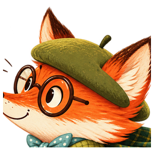

Sign in to keep your level, your certificate and your place in the stories.
Confirm what this device already knows about the account, then choose a new password. Nothing is sent anywhere — there is nowhere to send it.
دستکم ۸ نویسه؛ حرف بزرگ و کوچک؛ حرف و رقم؛ یکی از @#$%!
Stored on this device only · فقط روی همین دستگاه

English & Persian, one chat at a time